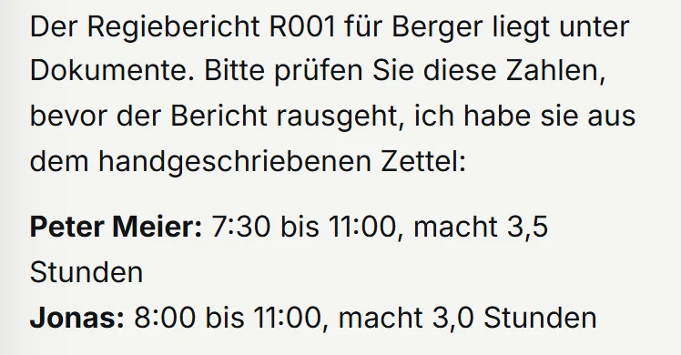
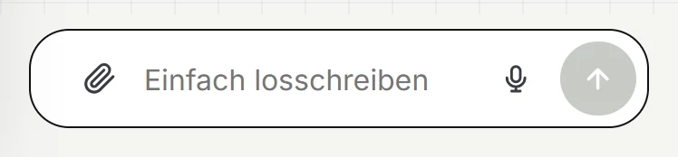
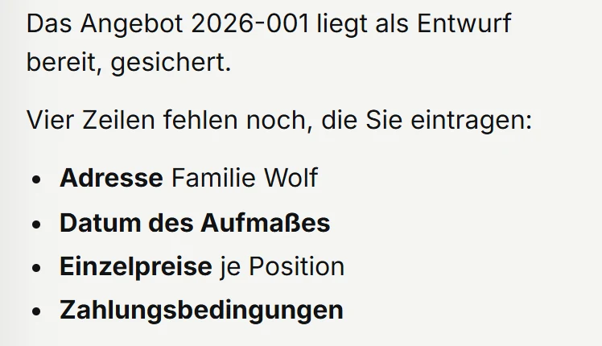

Für Handwerksbetriebe
Abends noch Büro? Jetzt nicht mehr.
Am Handy auf der Baustelle oder am Rechner im Büro: Sie geben ein Foto, ein Stichwort oder eine Sprachnachricht. Gernbei macht den Entwurf und merkt sich, was Sie dem Kunden zugesagt haben. Abschicken tun Sie.
Läuft bei Amazon. Sie installieren nichts, kein Rechner nötig.
Gernbei fürs Handwerk
am Handy, Foto vom Zettel
Am Handy auf der Baustelle,am Rechner im Büro. Dasselbe Gespräch.
Was Gernbei fürs Handwerk kann. Tippen Sie an.
Erfundener Betrieb, echte Antwort.
Was Gernbei für Sie tut

FotoRegiezettel, Kundenmail oder altes Angebot fotografieren. Zahlen vom Foto zeigt Gernbei Ihnen vorher zur Kontrolle.

HandyDas Mikrofon Ihres Handys schreibt in die Zeile, auch im Transporter.

AngebotLeere Felder nennt Gernbei, bevor etwas rausgeht. Vor dem Versand prüft Gernbei Endsumme und Steuersatz, die Angebotsnummer zählt fortlaufend weiter.
Nachts wird gesichert und geprüft. Morgens wissen Sie, was heute ansteht und wem Sie etwas zugesagt haben.
Schreiben
Merken
Ihr Bereich
So starten Sie
Bringen Sie eine Kundenmail oder einen Regiezettel mit. Sie sehen, welchen Entwurf Gernbei daraus macht. Unverbindlich.
Ich richte ihn persönlich ein, den Link bekommen Sie per Mail. Ihr Claude-Team bei Anthropic legen wir gemeinsam an.
Am Ende haben Sie Ihren ersten eigenen Bericht in der Hand.
Den Vertrag schließen wir nach dem Gespräch ab. Hakt etwas, helfe ich.
Was Gernbei nicht tut: Gernbei geht nicht ans Telefon, schreibt nicht auf WhatsApp und verschickt nichts, auch nicht aus Outlook. Hinaus geht nur, was Sie abschicken.
Der Preis
Den Preis nenne ich Ihnen im Gespräch, passend zu Ihrem Betrieb.
Dazu brauchen Sie ein eigenes Claude-Team bei Anthropic, dem Hersteller der KI.
Angebot nur für Unternehmer.
Kommt eine Bürokraft dazu, bekommt sie einen eigenen Zugang zum selben Preis.
Wo Ihre Daten liegen
Ihre Unterlagen liegen bei Amazon in der EU, in Stockholm, in einem Bereich nur für Ihren Betrieb. Was Gernbei für eine Antwort liest, verarbeitet Anthropic auch in den USA; Amazon und Anthropic sind amerikanische Unternehmen.
Bringen Sie einen Regiezettel oder eine Kundenmail mit. In zehn Minuten sehen Sie, was Gernbei daraus macht. Passt es nicht, sage ich Ihnen das.
● BAFA-gelisteter Berater · 50% Förderung für KMU, 1.750 EUR je Beratung
Oder direkt: hallo@gernbei.de · 0931 45321005 · Würzburg · remote & vor Ort